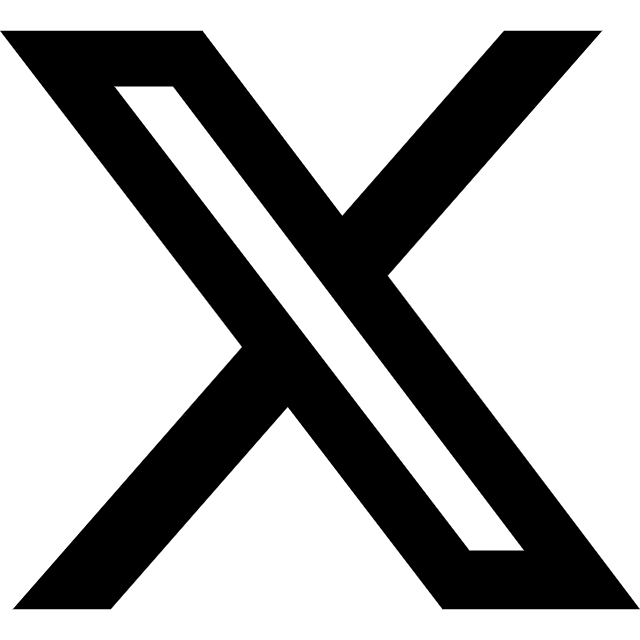
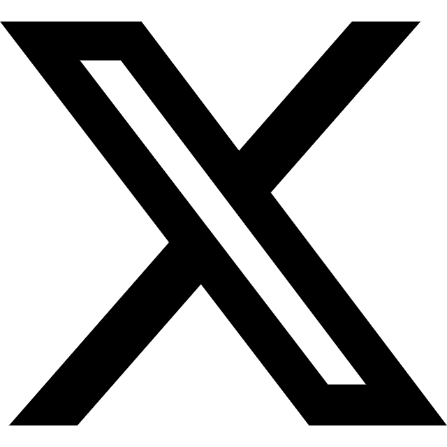

Fontes: Wikipedia | Nintenedo Wiki |
Redes socias da Nintendo: Twitter/X | FacebookConheça mais sobre um dos personagens mais icônicos dos games
Mario Mario, ou conhecido mais como apenas Mario, é um personagem fictício da franquia e série de jogos eletrônicos Mario da Nintendo, criado pelo desenvolvedor e designer de jogos eletrônicos japonês Shigeru Miyamoto. Servindo como mascote da Nintendo e protagonista homônimo da série, Mario já apareceu em mais de 200 jogos desde sua criação.
Mario é retratado como um encanador italiano baixinho rechonchudo e bigodudo vindo do Brooklyn que reside no Reino dos Cogumelos. Ele repetidamente tem a missão de resgatar a Princesa Peach do vilão Bowser, e impedir seus diversos planos de destruir e dominar o reino com ajuda de seu irmão gêmeo Luigi Mario. Mario também tem outros inimigos ou rivais, incluindo Donkey Kong e Wario.
Desde 1991 até 2023, Mario foi dublado por Charles Martinet.
Em agosto de 2023, a Nintendo anunciou que Charles Martinet se aposentaria da posição de dublador do Mario e se tornaria "Embaixador do Mario". O dublador Kevin Afghani sucedeu Martinet no jogo Super Mario Bros. Wonder em outubro de 2023.
Fontes: Wikipedia | Nintenedo Wiki |
Redes socias da Nintendo: Twitter/X | Facebook